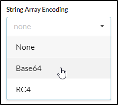
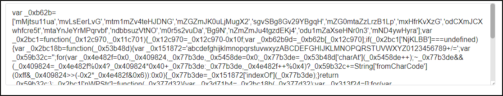

https://prettier.io/playground/
https://beautifier.io/
http://www.jsnice.org/
In case of deobfuscation:

(This can decode and encode!)
http://beautifytools.com/javascript-obfuscator.php
(Esoteric JS Obfuscator)
http://www.jsfuck.com
(This is a Nicefy)
http://www.jsnice.org/
(Another Esoteric JS Obfuscator)
https://utf-8.jp/public/jjencode.html

(Another Esoteric JS Obfuscator Emoji-like)
https://utf-8.jp/public/aaencode.html

Good way to obfuscate:
- Minifing
- Obfuscated (better with https://obfuscator.io/ BASE64 instead of String Array Encoding) or other Esoteric:

A simple console.log("Hello World") become like this:
